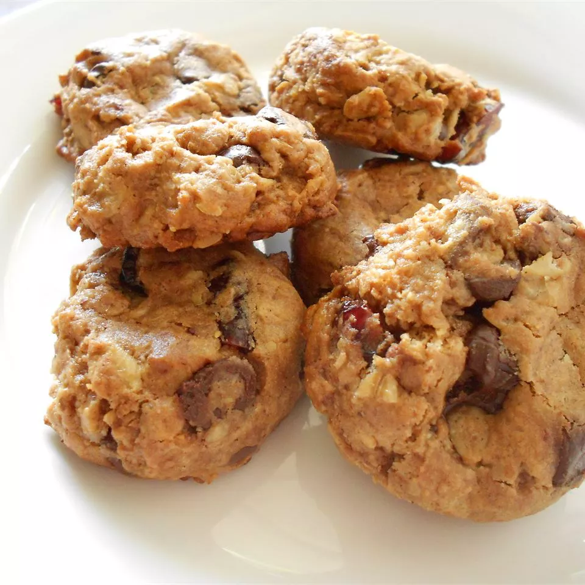

Whole Grain Breakfast Cookies

Description
My sister and I love something sweet with our coffee in the morning. We
created this recipe to make a wholesome breakfast. I generally double
the batch and keep them in the freezer. They taste even better frozen
(still soft!). Whole grains, fiber, and protein and no butter! Can it
really be delicious? Yes! My kids can't keep their fingers out of the
batter. I decided to add it to
Odin Recipes because everyone keeps asking
me for the recipe. Enjoy!
Ingredients
- 1 cup walnuts
- 1 ½ cups old-fashioned rolled oats (not instant)
- ⅓ cup whole wheat flour
- ½ cup ground flax meal
- 1 teaspoon baking soda ½ teaspoon salt
- 1 teaspoon ground cinnamon
- ½ cup almond butter
- ¼ cup canola oil
- ¼ cup blue agave nectar
- ⅓ cup brown sugar
- 1 egg
- 1 teaspoon vanilla extract
- ½ cup dried cherries
- 1 cup semi-sweet chocolate chips
Steps
- Do this first
- Do this second
- Do this third
- Make sure to do this
- Also be sure to do this
Enjoy!